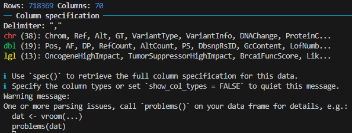

# Load all packages
require(readr)
require(dplyr)
require(here)
url <- "https://plus.figshare.com/ndownloader/files/51065732"
file_path <- here("_data/OmicsSomaticMutations.csv")
download.file(url, file_path )
depmap_mutation_data <- read_csv(file_path)Functions to read different kinds of data in Tidyverse
Below is a summary of Tidyverse packages and their functions for importing data (by ChatGPT). Use this as a quick reference, and consult the official documentation or search online for detailed usage and options. You don’t need to memorize everything—just know where to look when needed.
| Package | Function | Purpose | File Type / Input |
|---|---|---|---|
| readr | read_csv() |
Read comma-separated values | .csv |
read_tsv() |
Read tab-separated values | .tsv |
|
read_delim() |
Read delimited text files | Custom delimiter | |
read_fwf() |
Read fixed-width text files | .txt, structured text |
|
read_table() |
Read whitespace-separated files | .txt, space-separated |
|
read_lines() |
Read lines as character vector | Raw text | |
read_file() |
Read entire file as one string | Raw text | |
read_rds() / write_rds() |
Read/write R serialized objects | .rds |
|
type_convert() |
Guess and convert column types | Tibble/data frame | |
| readxl | read_excel() |
Read Excel files | .xls, .xlsx |
| haven | read_spss() |
Import SPSS data | .sav, .zsav |
read_stata() |
Import Stata data | .dta |
|
read_sas() |
Import SAS data | .sas7bdat |
|
| xml2 | read_xml() |
Parse XML | .xml, XML string/URL |
read_html() |
Parse HTML | .html, HTML string/URL |
|
xml_find_all() |
Find all nodes via XPath | XPath expression | |
xml_find_first() |
Find first matching node | XPath expression | |
xml_text() |
Extract text content | XML/HTML node | |
xml_attr() / xml_attrs() |
Extract attribute(s) | XML/HTML node | |
xml_children() |
Get child nodes | XML/HTML node | |
xml_structure() |
Display tree structure | XML/HTML document | |
| httr | GET() / POST() |
Make HTTP requests | API endpoints, web URLs |
content() |
Extract content from response | Parsed text, JSON, XML, raw | |
status_code() |
Check HTTP response code | HTTP response object | |
add_headers() |
Add custom headers to request | Authorization, content-type, etc. | |
authenticate() |
Add basic authentication credentials | Username/password | |
| rvest | read_html() |
(Wraps xml2::read_html()) |
Web page scraping |
html_nodes() |
Select multiple HTML elements (CSS/XPath) | CSS or XPath selector | |
html_node() |
Select a single HTML element | CSS or XPath selector | |
html_text() |
Extract visible text | HTML node | |
html_attr() |
Extract attribute value | HTML tag attribute (e.g., href, src) |
|
html_table() |
Extract HTML tables into tibbles | <table> elements |
Read DepMap Mutation Table
Before proceeding, ensure you have the tidyverse package installed by running install.packages("tidyverse").
We will work with the OmicsSomaticMutations.csv file from the 24Q4 DepMap release. The file can be downloaded from the following link: https://plus.figshare.com/ndownloader/files/51065732. While readr functions can read files directly from a URL, we will download the file locally since it will be used multiple times.
For the first attempt, we will use read_csv() with its default parameters.
Of course, the code runs and loads all rows and columns, but did you notice those warning messages? Don’t ignore them—they often provide valuable insights into potential issues with your data!

Let’s run the suggested problems() command as suggested!
problems(depmap_mutation_data)# A tibble: 584 × 5
row col expected actual file
<int> <int> <chr> <chr> <chr>
1 12396 60 1/0/T/F/TRUE/FALSE Reduced foot dorsiflexion strength in C… C:/U…
2 12396 61 1/0/T/F/TRUE/FALSE 30706531.0 C:/U…
3 12428 60 1/0/T/F/TRUE/FALSE Pulse pressure C:/U…
4 12428 61 1/0/T/F/TRUE/FALSE 30224653.0 C:/U…
5 16816 58 1/0/T/F/TRUE/FALSE dd227 C:/U…
6 16816 59 1/0/T/F/TRUE/FALSE CANDLE syndrome C:/U…
7 18217 60 1/0/T/F/TRUE/FALSE Response to anti-retroviral therapy (dd… C:/U…
8 18217 61 1/0/T/F/TRUE/FALSE 24554482.0 C:/U…
9 18985 60 1/0/T/F/TRUE/FALSE Migraine C:/U…
10 18985 61 1/0/T/F/TRUE/FALSE 27322543.0 C:/U…
# ℹ 574 more rowsIf you examine the first problem as an example, you’ll notice that the 60th column (GwasDisease) is empty until row 12,396. To investigate further, I ran the following command to extract all values in this column and display the unique values as a quick spot-check:
depmap_mutation_data %>% pull(GwasDisease) %>% unique()[1] NADid you notice? The entire column is filled with NA values, indicating that it was not properly loaded using the default read_csv() function. This highlights the importance of carefully reviewing your data after importing it. Always double-check for issues like this to ensure your analysis starts on the right foot.
While read_csv() is generally a better option than read.table()—offering convenience by automatically handling quotes, separators, and headers—it is not foolproof. Even if your data is truly a CSV file, the importer may still encounter issues and fail to load your data correctly. This is a critical point to remember for any data scientist or bioinformatician: always validate your imported data to ensure accuracy and reliability.
depmap_mutation_data <- read_csv(file_path, guess_max = Inf)Rows: 718369 Columns: 70
── Column specification ────────────────────────────────────────────────────────
Delimiter: ","
chr (44): Chrom, Ref, Alt, GT, VariantType, VariantInfo, DNAChange, ProteinC...
dbl (20): Pos, AF, DP, RefCount, AltCount, PS, GcContent, LofNumberOfTranscr...
lgl (6): OncogeneHighImpact, TumorSuppressorHighImpact, LikelyLoF, HessDriv...
ℹ Use `spec()` to retrieve the full column specification for this data.
ℹ Specify the column types or set `show_col_types = FALSE` to quiet this message.# Check for problems again
problems(depmap_mutation_data)# A tibble: 0 × 5
# ℹ 5 variables: row <int>, col <int>, expected <chr>, actual <chr>, file <chr># Verify the column values
depmap_mutation_data %>% pull(GwasDisease) %>% unique() [1] NA
[2] "Reduced foot dorsiflexion strength in Charcot-Marie-Tooth disease type 1A"
[3] "Pulse pressure"
[4] "Response to anti-retroviral therapy (ddI/d4T) in HIV-1 infection (Grade 2 peripheral neuropathy)"
[5] "Migraine"
[6] "Heel bone mineral density"
[7] "Type 2 diabetes"
[8] "Chronic obstructive pulmonary disease"
[9] "Post bronchodilator FEV1"
[10] "Intracranial aneurysm"
[11] "Coronary artery disease (myocardial infarction, percutaneous transluminal coronary angioplasty, coronary artery bypass grafting, angina or chromic ischemic heart disease)"
[12] "Highest math class taken (MTAG)"
[13] "Neuroticism"
[14] "Height"
[15] "Red cell distribution width"
[16] "Vitiligo (non-segmental)"
[17] "Exudative age-related macular degeneration"
[18] "Creatinine levels"
[19] "Mean arterial pressure"
[20] "Asthma"
[21] "Endometriosis or endometrial cancer (pleiotropy)"
[22] "Number of sexual partners"
[23] "Chronic inflammatory diseases (ankylosing spondylitis, Crohn's disease, psoriasis, primary sclerosing cholangitis, ulcerative colitis) (pleiotropy)"
[24] "Cholesterol, total"
[25] "Blood protein levels"
[26] "Fasting blood glucose adjusted for BMI"
[27] "Educational attainment (years of education)"
[28] "Eczema"
[29] "Lack of premeditation"
[30] "Common carotid intima-media thickness in HIV negative individuals"
[31] "Systemic sclerosis"
[32] "Smooth-surface caries"
[33] "Butyrylcholinesterase levels"
[34] "Idiopathic membranous nephropathy"
[35] "Lymphocyte percentage of white cells"
[36] "Gut microbiome composition (summer)"
[37] "Obesity-related traits"
[38] "Self-reported math ability"
[39] "Proliferative diabetic retinopathy (vs NPDR and no DR)"
[40] "Smoking initiation (ever regular vs never regular) (MTAG)"
[41] "Body mass index"
[42] "Chronic periodontitis (mean interproximal clinical attachment level)"
[43] "White blood cell count"
[44] "Alanine aminotransferase levels in excessive alcohol consumption"
[45] "Time-dependent creatinine clearance change response to tenofovir treatment in HIV infection (time and treatment arm interaction)"
[46] "Type 1 diabetes"
[47] "Response to anti-retroviral therapy (ddI/d4T) in HIV-1 infection (Grade 3 peripheral neuropathy)"
[48] "Heart rate"
[49] "Schizophrenia"
[50] "Narcolepsy"
[51] "Educational attainment (MTAG)"
[52] "Body fat distribution (trunk fat ratio)"
[53] "Circulating myeloperoxidase levels (plasma)"
[54] "Urinary albumin excretion"
[55] "LDL cholesterol"
[56] "Monocyte count"
[57] "Childhood ear infection"
[58] "Major depressive disorder"
[59] "High IL-1beta levels in gingival crevicular fluid"
[60] "Waist-to-hip ratio adjusted for BMI (additive genetic model)"
[61] "Reticulocyte fraction of red cells"
[62] "Circulating myeloperoxidase levels (serum)"
[63] "High light scatter reticulocyte count"
[64] "Myopia (pathological)"
[65] "Pancreatic cancer"
[66] "Tonsillectomy"
[67] "Plantar warts"
[68] "IgG galactosylation phenotypes (multivariate analysis)"
[69] "Chronic hepatitis B infection"
[70] "Morning vs. evening chronotype"
[71] "Coronary heart disease"
[72] "Facial morphology (factor 12, vertical position of sublabial sulcus relative to central midface)"
[73] "Lung function (FEV1/FVC)"
[74] "Glycine levels"
[75] "Monocyte percentage of white cells"
[76] "Intraocular pressure" As you can see, no problems were found, and the column now contains more values.
Even if there are no warnings now, it’s always a good practice to perform a few quick checks to inspect your data. You don’t want to encounter issues later due to unnoticed problems in the initial step. Some example commands you can use include dim(), head(), spec() and names().